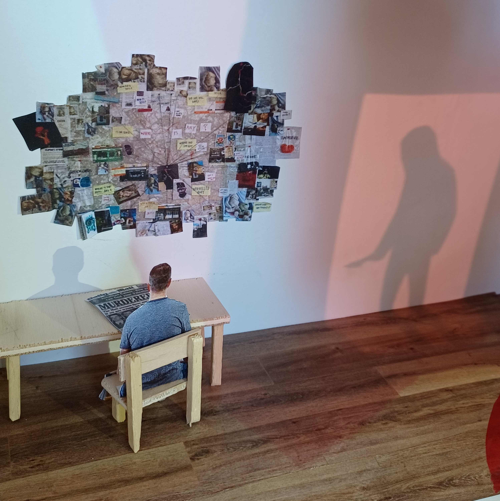

3D art
This page contains all 3D artworks I made. I use a lot of different materials in these kind of works. I make less 3D works than paintings or drawings but when i make something 3D it usually takes me longer to make. I do like making 3D artworks a lot.
-

This is a work made with clay, wood, metal and paint. It is a heart that is part mechanical.
-

This is a work made with soda tabs, fabric, jumprings and bleach. It is a shirt and a corset shaped belt.
-
This is a work made with fabric, cardboard, wire, tread and tape. It is a hat and a mask inspired by plage doctor attire.
-

This is a work made of paper, wood, plastic and cardboard. It is a miniature version of a typical scene out of the detective/mystery genre.
-

This is a work made out of a pumpkin. It is a pumkin carved to look like a pumpkin out of minecraft.
-

This is a work made from wire, glue, and soda tabs. It is a rose.
-

These works are made from fabric and stuffing, These are mushrooms with arms, legs and a face.